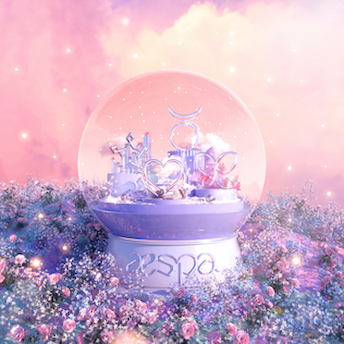

“Forever” is a single by K-Pop girl group, aespa. It is the first release to come from the quartet since their debut single, “Black Mamba” in November 2020. “Forever” is a remake of a song by the same name by R&B producer & songwriter, Yoo Young Jin. However, this version features new instrumentation and is accompanied by a winter-themed music video.
I look like you I remember the day you came On that day, the white snow was silent Day down
I fell in love with you at first sight I knew it would be forever So we recognize each other Getting closer
It’s still a little strange I can see the future Knowing me better than me I’ll be like your habit
Forever Forever I want to give you only pretty things Forever Forever A heart filled with you Happy forever So I can live with love I’ll always be standing next to you As always
Even when this trip is difficult and lonely I know there is In that case, I’ll give you my shoulder I want to be on your side
Forever Forever As much as your clear soul Forever Forever I’ll protect you from losing Happy forever Until the sunset is beautiful I’ll always walk next to you
Even if you give everything in the world I can’t change, even for a single day with you Me who resembles you next to me I want to meet more with a happy heart
Forever Forever I want to give you only pretty things Forever Forever A heart filled with you Happy forever So I can live with love I’ll always be standing next to you As always
Forever Forever